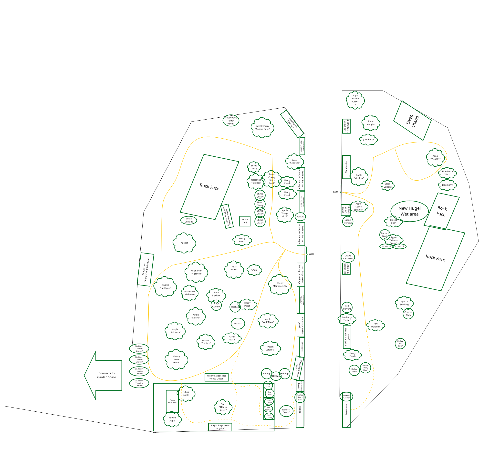

About the Planting Site
The Promenade at Miner's Point is a private planting of the Stewart and Duimovich family. The site features fruit trees and shrubs arranged in 2 fenced areas separated by the main promenade path.
Trees were selected for their suitability to a Zone 4/5 planting region in Eastern Ontario, providing seasonal fruit for the family and habitat for pollinators throughout the year.
Planting Site Map

Map of The Promenade at Miner's Point – Stewart & Duimovich family planting.
Fruit Tree Catalogue
Growing Notes
- Climate: The site sits in USDA Zone 4/5.
- Irrigation: A 1000L water tote is on the site and when needed the trees are hand watered.
- Pollination: Most stone fruit varieties are at least partially self-fertile; additional pollinator varieties have been paired to maximise set.
- Pruning: Annual late winter pruning is carried out in March/April.
- Pests & disease: Integrated Pest Management (IPM) practices are used exclusively. No synthetic pesticides are applied on site.